Практичний досвід · журнал «ДентАрт» 2024 №1
Мультидисциплінарний підхід у реабілітації пацієнта з частковою вторинною адентією та зубощелепною патологією
MULTIDISCIPLINARY APPROACH IN THE REHABILITATION OF A PATIENT WITH PARTIAL SECONDARY ADENTIA AND MAXILLOFACIAL PATHOLOGY
З розвитком ортопедичної стоматології проблему часткової адентії вирішували різними методами. Багато десятиліть відсутні зуби замінювали незнімними мостоподібними протезами у випадку включених дефектів і знімними протезами в разі кінцевих. Далі було впроваджено метод дентальної імплантації. І нині золотим стандартом відновлення відсутнього зуба є протезування на імпланті. Цей метод успішний за наявності достатнього обсягу кістки для інтеграції імпланта. У разі значної атрофії кістки немає можливості застосувати класичну методику. Наступний етап розвитку хірургічної стоматології – це поява виличних імплантів Zygoma для комплексної реабілітації пацієнтів зі значною втратою кістки на верхній щелепі.
Переваги методу: ефективність, надійність і довговічність. Вилична кістка потужна, вона майже не атрофується. Виличний імплант довгий, максимально інтегрується, здатний витримувати велике навантаження.
Кожна операція детально планується. На підставі діагностичних даних створюється цифровий проєкт, який затверджують хірург і ортопед. Створюється навігаційний шаблон з отворами під імпланти. Моделюються фрагменти розбірного металевого каркаса (так званої балки). Заздалегідь виготовляються тимчасові зуби. Через шаблони встановлюють імпланти, фрагменти балки фіксують до імплантів. Балка зварюється, і на ній фіксуються тимчасові зуби. Хірургічний та ортопедичний етапи пацієнт проходить в один день, обов'язково у медикаментозному сні.
У статті описано міждисциплінарний підхід під час реабілітації стоматологічного пацієнта, який звернувся в клініку «Praktika». Така технологія, як установка імплантів Zygoma, застосовується тут уже кілька років. Команда лікарів з великим досвідом спеціалізується на складній хірургії та ортопедії. В Україні «Praktika» лідирує за кількістю і якістю встановлених виличних імплантів.
Пацієнт віком 36 років звернувся на консультацію до лікаря-ортопеда Миколи Солодовніка зі скаргами на неестетичну усмішку і відсутність бічних зубів.
Зроблено експрес-діагностику: фото зубів, низку функціональних тестів. Обговорили з пацієнтом його проблеми, для вирішення яких рекомендується комплексне лікування з попередньою хірургічною та ортодонтичною підготовкою до подальшого протезування. Склали план діагностики: серію поза- і внутрішньоротових фото, рентгендіагностику (ОПТГ, КТ 2-х щелеп, ТРГ у бічній проєкції), мануальний функціональний аналіз, сканування зубних рядів.
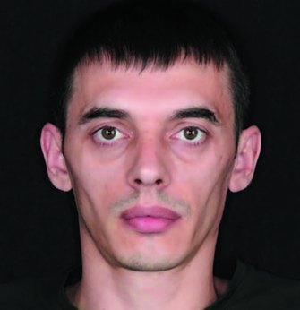
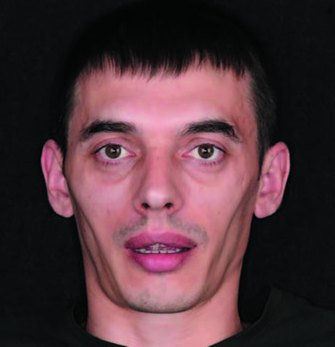
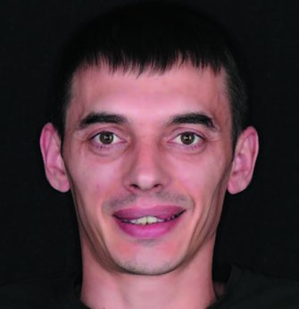
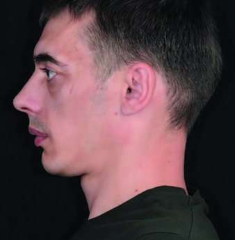
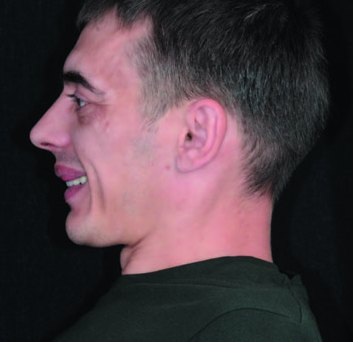
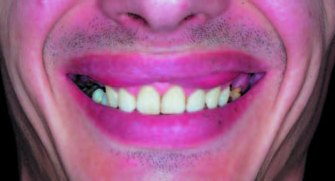
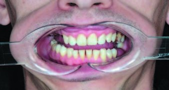
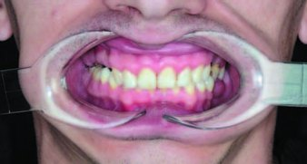
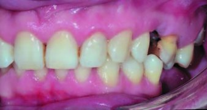
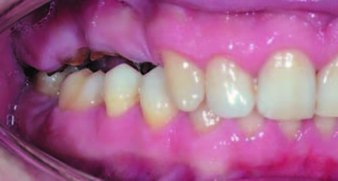
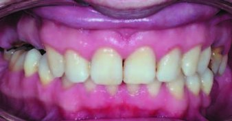
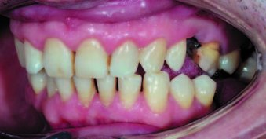
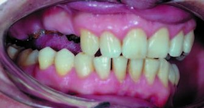
Фото 1. Серія поза- і внутрішньоротових фото.
Проблеми
Ретрузія верхніх різців, фольга 8 мікрон затримується між верхніми і нижніми різцями. Зруйновані клінічні коронки зубів 24 і 25. Це причина зубоальвеолярного подовження і викривлення оклюзійної площини в третьому квадранті. Динамічна оклюзія: стерті ікла, в ікловому веденні в контакті латеральні різці.
Тест із валиками для розслаблення жувальних м'язів: змінилася позиція нижньої щелепи. Рентгендіагностика: бічні зуби першого і другого квадранта зі значними деструктивними змінами і поганим прогнозом.
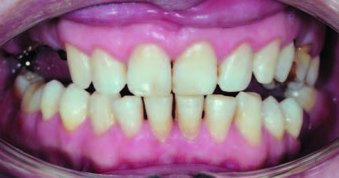
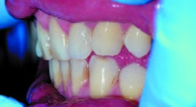
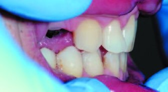
Фото 2. Динамічна оклюзія.
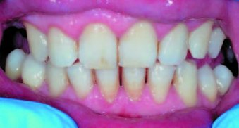
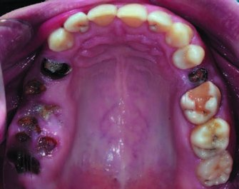
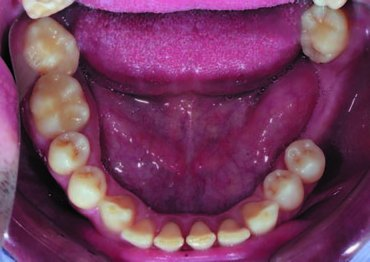
Фото 3. Тест із валиками для розслаблення жувальних м'язів.
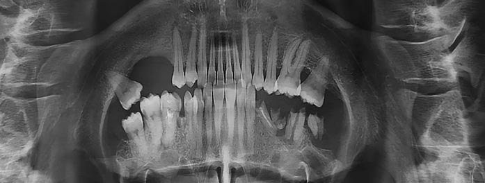
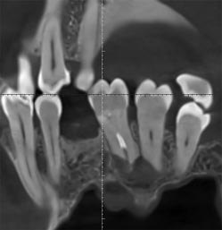
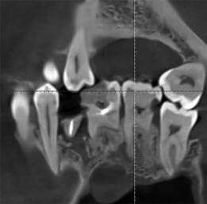
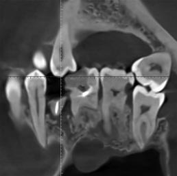
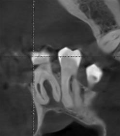
Фото 4. Ортопантомограма, КТ 2-х щелеп.
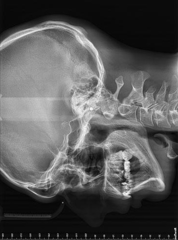
Фото 5. Телерентгенограма.
| Параметр | Норма | Значення |
|---|---|---|
| ANB | 2±1° | 6° |
| NA-APog (Convexity) | 0±2° | 10° |
| SN-Pog | 80°±2° | 79° |
| FH-NPog (Facial angle) | 87,8° | 88° |
| WITS | -1±2mm | 4,0mm |
| SNA | 82°±2° | 79° |
| SNB | 80°±2° | 73° |
| SN-Go | 44°±3° | 40,5° |
| Ar-Go-Me (Gonial angle) | 119°±5° | 117,5° |
| FMA/FMIA/IMPA (Tweed) | 25±5°/65±3°/90±5 | 19°/62°/92° |
| U1-NA (°) | 22°±2° | 3° |
| U1-NA (mm) | 4±2mm | -2 |
| L1-NB (°) | 25°±2° | 20° |
| L1-NB (mm) | 4±2mm | 4,5mm |
| Кут ii (міжрізцевий кут) | 130°±5° | 149° |
| Li-NsPog'(Ricketts) | -2±2mm | -2,6mm |
| Носо-губний кут | 102±8° | 109° |
| FH-Ls'-Pog'(кут Z) | 75°±4° | 70° |
Цефалометричний аналіз
Скелетний тип: положення верхньої щелепи щодо основи черепа – ретрогнатія; положення нижньої щелепи щодо основи черепа – ретрогнатія; взаєморозташування щелеп: скелетний клас ІІ; мезоцефалічний тип росту лицьового скелета.
Дентоальвеолярний тип: положення верхніх різців щодо основи черепа – ретрузія; положення нижніх різців щодо базису нижньої щелепи – норма, міжрізцевий кут більший норми.
Супутні прояви: ретрогнатичний профіль.
На консиліумі лікарів обговорено діагностику і складено план комплексного лікування:
- Функціональна корекція: усунення шкідливих звичок та дій, які є причиною дисфункції СНЩС.
- Вправи для нормалізації симетрії губ.
- Пародонтологічна підготовка.
- Видалення зубів 15, 16, 17, 18, 24, 25, 26, 27, 28, 48, під час цього ж візиту встановлення мікроімплантів на нижній щелепі з метою інтрузії бічних зубів третього квадранта.
- Реконтурування зубів.
- Ортодонтичне лікування за допомогою брекет-системи на верхній і нижній щелепі.
- Можлива сепарація зубів.
- Після інтрузії зубів встановлення імплантів на обох щелепах і тимчасове протезування на верхній щелепі.
- Через два місяці після імплантації тимчасове протезування нижньої щелепи.
- Зняття брекет-системи, фіксація незнімних ретейнерів на верхній і нижній щелепах.
- Сплінттерапія визначення положення нижньої щелепи.
- Постійне протезування. План постійного протезування уточнюватиметься ортопедом після сплінттерапії.
- Можлива корекція ясенного рівня зубів 13, 23.
- Можливе виготовлення двощелепної капи.
Повторна консультація. Презентовано клінічні та фінансові плани лікування. Пацієнт дав згоду.
Етапи лікування
Цифрове планування хірургічного шаблону для встановлення трьох мікроімплантів (хірург спільно з ортодонтом). У седації видалено зуби, і відразу під час операції через шаблони встановлено мікроімпланти.
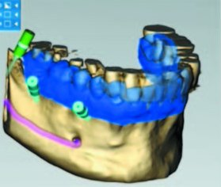
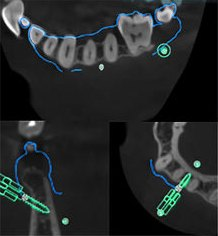
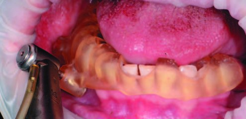
Фото 9. Клінічна картина після загоєння.
Зафіксовано брекет-систему Damon Q2.
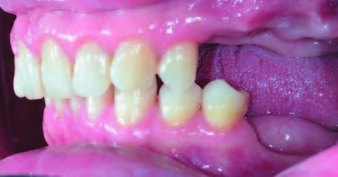
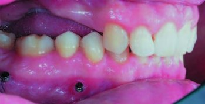
Через шість місяців вирівняно оклюзійну площину.
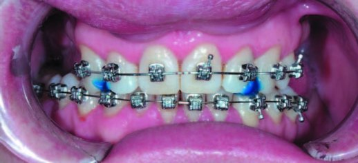
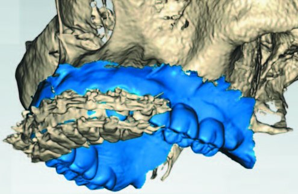
За КТ перевірка позиції коренів зубів. Корені зубів паралельні.
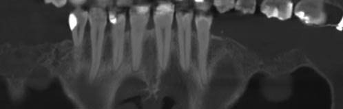
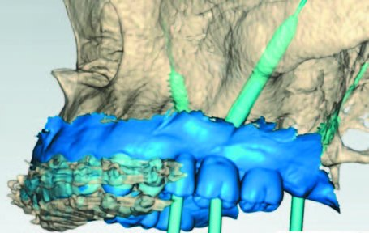
Після створення прототипу зубів зроблено віртуальне планування позицій імплантів, підбір multi-unit абатментів, створено хірургічні шаблони. У 1 квадранті заплановано встановлення імплантів Straumann BLX під кутом у позиції зуба 25 та птеригоїдного імпланта в ділянці горбика верхньої щелепи. У позиції зуба 16 обрано виличний імплантат JDental Care Zygoma. У 1 квадранті для встановлення імплантів створено металевий хірургічний шаблон з опорою на кістку за технологією SLM-принтування.
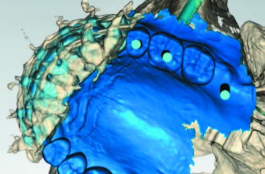
Фото 16. Віртуальне планування позицій імплантів у 1 квадранті.
У 2 квадранті обрано імпланти Straumann BLX. Імплант на ділянці зуба 24 у прямій позиції. Імплант на ділянці зуба 26 під нахилом для максимального використання доступного об'єму кістки та обходження верхньощелепного синусу. Птеригоїдний імплант для дистальної опори конструкції з лівого боку. Для встановлення імплантів у 2 квадранті використали пластиковий хірургічний шаблон, надрукований на 3D-принтері. Імпланти обрано і розташовано таким чином, щоб максимально задіяти доступний обсяг кісткової пропозиції без використання додаткових процедур збільшення об'єму кісткової тканини.
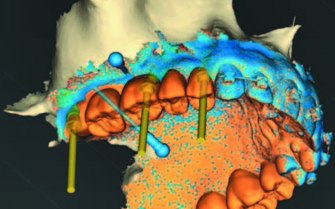
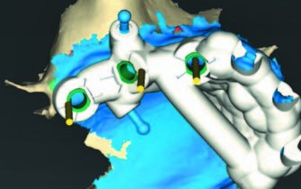
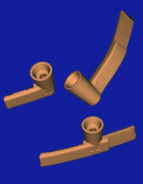
Фото 17. Віртуальне планування позицій імплантів у 2 квадранті.
Шаблони з обох боків передбачали повний навігаційний протокол встановлення імплантів з перенесенням індексу імпланта та визначеним положенням кутових мультиюнітів.
Після віртуального планування позиції імплантів та multi-unit абатментів позиції імплантів віртуально передано для моделювання тимчасових конструкцій, які будуть встановлені після операції. Для виконання протоколу негайного навантаження бокових сегментів верхньої щелепи виготовлено розбірну металеву балку для внутрішньоротового зварювання і тимчасові пластмасові зуби для перебазування на балку.
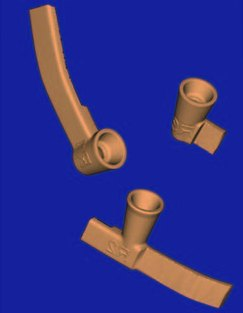
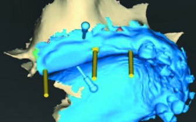
Фото 18. Розбірна балка.
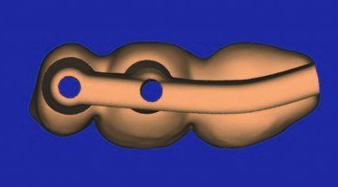
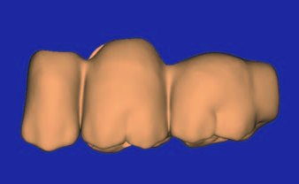
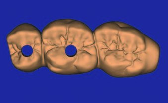
а) 1 квадрант
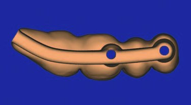
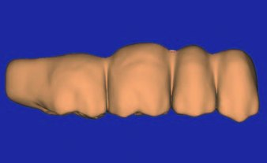
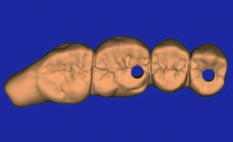
Фото 19. Тимчасові пластмасові зуби: а) 1 квадрант, б) 2 квадрант.
На нижній щелепі заплановано встановлення двох імплантів Straumann Standard Plus у позиціях зубів 36 і 37 із використанням звичайного шаблону з опорою на зуби.
Хірургічне втручання проводилося в седації. Під час операції встановлено імпланти за допомогою хірургічних шаблонів згідно з планом. У 1 квадранті імплантацію зроблено за допомогою накісткового шаблону, який фіксується гвинтами для остеосинтезу і частково має опору на сусідні зуби.
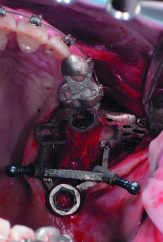
Фото 20. Встановлення імплантів за допомогою хірургічних шаблонів.
У 2 квадранті встановлено імпланти за допомогою класичного шаблону з опорою на зуби. Торки на всіх імплантах верхньої щелепи досягнуто більше 50 Ncm. Встановлено multi-unit абатменти в імпланти верхньої щелепи.
Проведено збільшення об'єму м'яких тканин на ділянці імплантів верхньої щелепи. Накладено шви, що розсмоктуються. Після завершення імплантації верхньої щелепи ортопед провів внутрішньоротове зварювання армувальних балок на імплантах верхньої щелепи та перебазування тимчасових зубів на імплантах у ротовій порожнині.
Після цього встановлено імпланти нижньої щелепи за допомогою класичного хірургічного шаблону згідно з планом.
Зроблено негайне навантаження імплантів на верхній щелепі тимчасовими зубами з армувальними балками за допомогою внутрішньоротового зварювання. Імпланти нижньої щелепи отримали відтерміноване навантаження після досягнення остеоінтеграції через 2 місяці.
Фото 21. Негайне навантаження імплантів.
Рентгенкартина відразу після встановлення імплантів.
Фото 22. Ортопантомограма.
Фото 23. Через п'ять тижнів після операції.
Далі триває ортодонтичне лікування.
Фото 24. Рік лікування, проміжна діагностика.
Ретрузія верхніх різців зменшилася, покращилася усмішка, вирівнялася оклюзійна площина. Динамічна оклюзія – у контакті ікла.
Фото 25. Динамічна оклюзія.
Останній ортодонтичний огляд. Додано апаратуру, щоб поліпшити позицію щелепи і прибрати перехресний прикус на ділянці зубів 27/37. Далі планується збільшити нахил верхніх фронтальних зубів, створити проміжки між ними для можливості переміщення нижньої щелепи вперед. Можливе застосування шини для уточнення позиції щелепи.
Фото 26. Останній ортодонтичний огляд.
Висновки
Застосування виличних імплантатів Zygoma – ефективне рішення під час комплексної реабілітації пацієнтів зі значною втратою кістки на верхній щелепі. Командна робота під час лікування пацієнта із зубощелепною патологією дає змогу максимально точно діагностувати, планувати та вести лікування для досягнення успішного довгострокового результату.
Література
- Damon Dwight (2019). Damon System. The Workbook: 34–38.
- William R. Proffit (2006). Contemporary Orthodontics, 6th Edition: 347–348.
- David M. Sarver (2020). Dentofacial Esthetics: 254–260.
- Misch K. E. (2017). Dental implant based orthopaedic treatment: 135–138.
- Fradeani M. (2008). Aesthetic analysis. Part 1: 75–85.
- Fradeani M., Barducci G. (2010). Prosthetic Treatment. Part 2: 138–139.
- Linkevičius T. (2019). Zero Bone Loss Concepts: 31–37.
- Garg A. K. (2023). Zygoma Implants: Step by Step: 45–48.
- Aparicio C. (2023). Advanced Zygomatic Implants: 89–94.
- Agliardi E., Romeo D. (2020). Tilted Implants: 123–139.